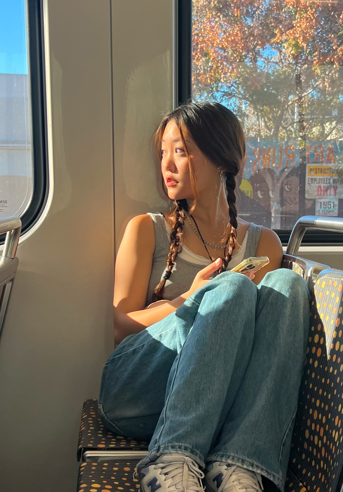
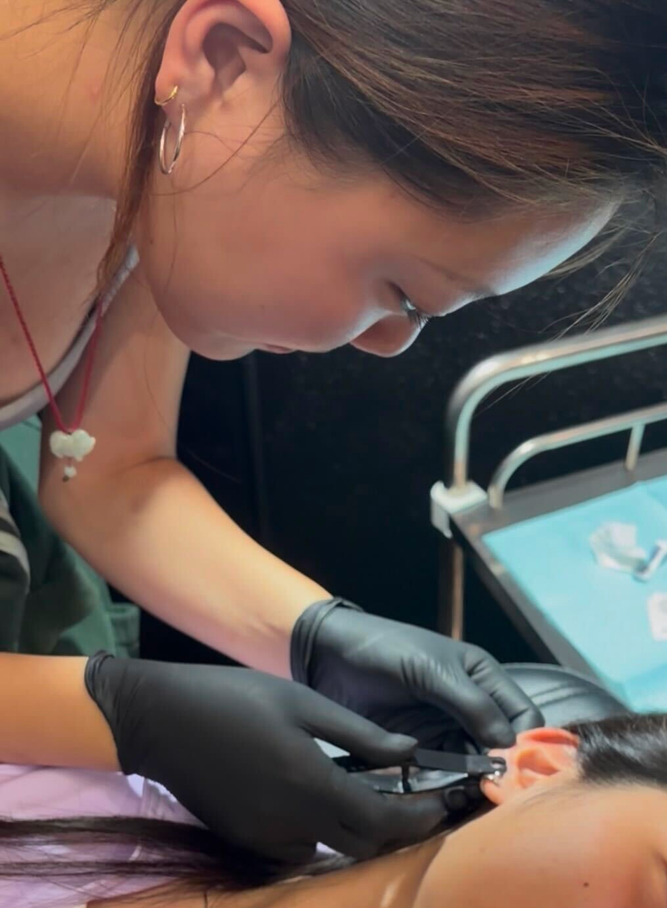

hello! i'm kari, nice to meet you :)
I'm a designer and illustrator drawn to the space between visual storytelling and product design. My work began with art, music, and making things for the people around me.
Since then, I've been constantly seeking out new experiences to learn from and new skills to refine — from design and entrepreneurship to teaching, making, and building.
My practice focuses on creating digital experiences that feel intuitive, thoughtful, and human. I care about beautiful details, but also the thinking behind them: understanding how people move through systems, simplifying complexity, and shaping ideas into experiences people can connect with.
I may be a designer, but I'm also a piercing apprentice, an art teacher, and a cafe hopper. If any of those interest you, I'd love to chat — especially over coffee :)


